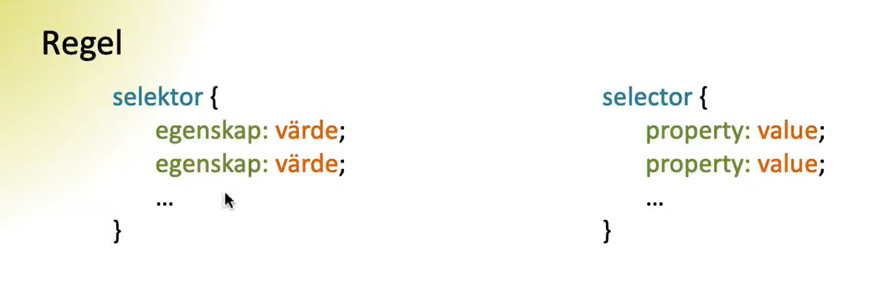

Frågor om CSS
1. Vad är en regel i CSS och vad består den av?
Svar:
Regel i css:det är syntaxen som vi använder i css för att kunna ändra stilen på olika element, och den beskriver hur elementen ska visas för användaren
selektor{
egenskap:värde;
egenskap:värde;
...
}

2. Vad menas med kaskad i CSS?
Svar:
Det menas att de olika stiler som ger till ett element bygger på varandra för att skapa det slutliga stilen till detta element. Ändrar vi på värdet till samma engenskap flera gånger så det är sista som gäller(med hänsyn till selektors företräde )